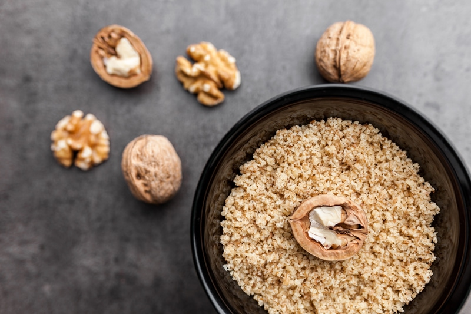

Walnut Flour – made from Whole Nuts
As you scroll through my recipes and those created by other chefs, you might see some of these phrases in recipes; 1 cup of pecan meal or 1 cup of pecan flour. They typically mean the same thing. If you are ever in doubt, always reach out to the recipe designer and ask them to clarify.

You can easily create your own walnut flour (meal). Remove the lid of your food processor, add walnuts, close lid, and process! Ok, there are a few other steps and tips that I want to share, but basically, that is all that there is to it. There is, however, a step that I highly recommend, and that is soaking and dehydrating the walnuts first. Please click (here) to read how and why.
Walnut Crumbles
Walnut crumbles are really what it ought to be referred to because the truth is… walnuts really don’t break down to the consistency of flour (as you might be familiar with). The reason is that they are composed predominantly of fat.
Come back here… don’t let fat content scare you away. These large, buttery flavored nuts are rich in numerous vitamins and minerals are known for promoting various aspects of health. Just 1/4 cup of walnuts provides more than 100 % of the daily recommended value of plant-based omega-3 fats, along with high amounts of copper, manganese, molybdenum, and biotin. According to Dr. Weil, “The main known function of molybdenum in humans is to act as a catalyst for enzymes and to help facilitate the breakdown of certain amino acids in the body.” Pretty importance stuff.
If you are looking for a way to create a finer grind of pecan flour, that can be achieved through the process of creating walnut pulp. Walnut pulp is produced from making walnut milk. That is another whole process that we will dive into later.
Keep a close eye on this process because if you over-process the walnuts, they will release too much of their oils and if that happens, you are heading to nut butter land. Should you get distracted while you are processing your nuts and they do indeed get too oily, don’t fret. Go ahead and continue processing the walnuts, add a pinch of salt and sweetener (if desired) and make a healthy walnut nut butter.
When it comes to creating our own flour, I recommend using a food processor that is fitted with an “S” blade. In a pinch, you can use a blender, but you have a greater chance it turning into a nut butter because there isn’t much room for the walnuts to freely spin in. It is best to make these as needed, rather than pre-making them and having them sit around. Nutrients will be lost over time. If you find that you processed too much, that’s ok… put it in a freezer-safe jar and store in the fridge, so the oils don’t go rancid.
Also, walnut flour has a distinctly walnut taste and will impart that into a recipe. So keep in mind as you are building a flavor profile for a dish.
Walnut Flour made from walnut pulp
To make the flour from pulp:
- Using an offset spatula, spread the pulp on a nonstick drying sheet on a dehydrator shelf.
- Dehydrate at 115 degrees (F) for up to 24 hours or until completely dry.
- Dry times always vary depending on the climate, how thick you spread the pulp, how full the machine is, and so forth. So use this as a guideline.
- Once dry and cooled, transfer the dehydrated pulp to a food processor and grind to a flour.
- It won’t break down to a powdery flour texture but pretty darn close.
- Store in an airtight container in the refrigerator for up to 3 days or in the freezer for longer shelf life.
Walnut Flour made from whole walnuts
To make the flour from whole walnuts:
- Soak and dehydrate the walnuts.
- Place walnuts in the food processor, fitted with an “S” blade, and process until it reaches a small crumble.
- This type of flour won’t break down to a powder, just small crumbles due to the fat content.
- Be careful that you don’t over-process and start making walnut butter.
- Try to make it only as needed, so it doesn’t go rancid if you make extra, store in an airtight container in the refrigerator for up to 3 days or in the freezer for longer shelf life.
© AmieSue.com